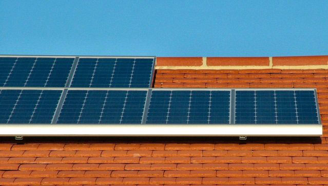

Solar Panels
Solar power is capital intensive, and the main cost of owning a system comes upfront when buying the equipment. The solar module will almost certainly represent the largest single component of the overall expense.
Other equipment necessary for installation includes an inverter (to turn the direct current produced by the panel into the alternating current used by household appliances), metering equipment (if it is necessary to see how much power is produced), and various housing components along with cables and wiring gear.
Some homeowners also consider battery storage. Historically, batteries have been prohibitively expensive and unnecessary if the utility pays for excess electricity that is fed into the grid (see below). The installation labor cost must also be factored in.